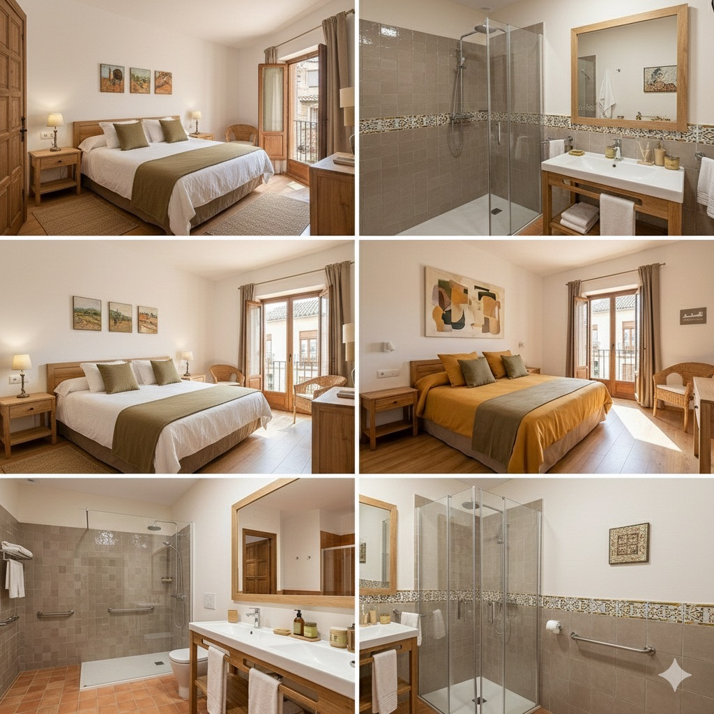

Nuestras Habitaciones
En Hostal Ciudad de Luz ofrecemos habitaciones diseñadas para tu comodidad y descanso, con un estilo que combina tradición y modernidad. El hostal boutique cuenta con 12 habitaciones, diseñadas para reflejar el patrimonio local y bajo criterios de sostenibilidad. La distribución permite atender distintos perfiles de huéspedes, garantizando accesibilidad y un trato cercano. Tipología de habitaciones: 6 habitaciones dobles estándar. 3 habitaciones dobles superiores. 2 habitaciones familiares. 1 habitación adaptada para personas con movilidad reducida. Todas las estancias están decoradas con referencias culturales de Jaén, ofreciendo una experiencia única y coherente con nuestros valores de compromiso social y cultural.
- Habitación Doble: Perfecta para parejas, con vistas al casco histórico.
- Suite Oliva: Espaciosa, con terraza privada y decoración inspirada en el olivar.
- Habitación Familiar: Ideal para grupos o familias, con capacidad hasta 4 personas.
